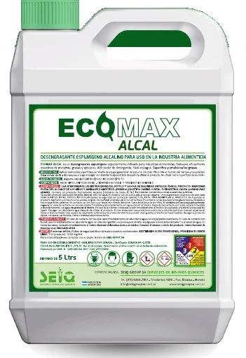

Alcalino · Espumígeno
ECOMAX ALCAL
Desengrasante espumígeno alcalino
- Remueve depósitos de proteínas, grasas y azúcares.
- Alto poder de detergencia y fácil enjuague.
- Saponifica y emulsiona las grasas.
- Dilución
- 1 % a 3 %
- Acción
- 15 a 30 min
- pH
- 13
Modo de uso: Aplicar con equipo generador de espuma, dejar actuar y enjuagar con abundante agua potable. No utilizar sobre aluminio.
Presentación5 L20 L200 L
Pedir cotización